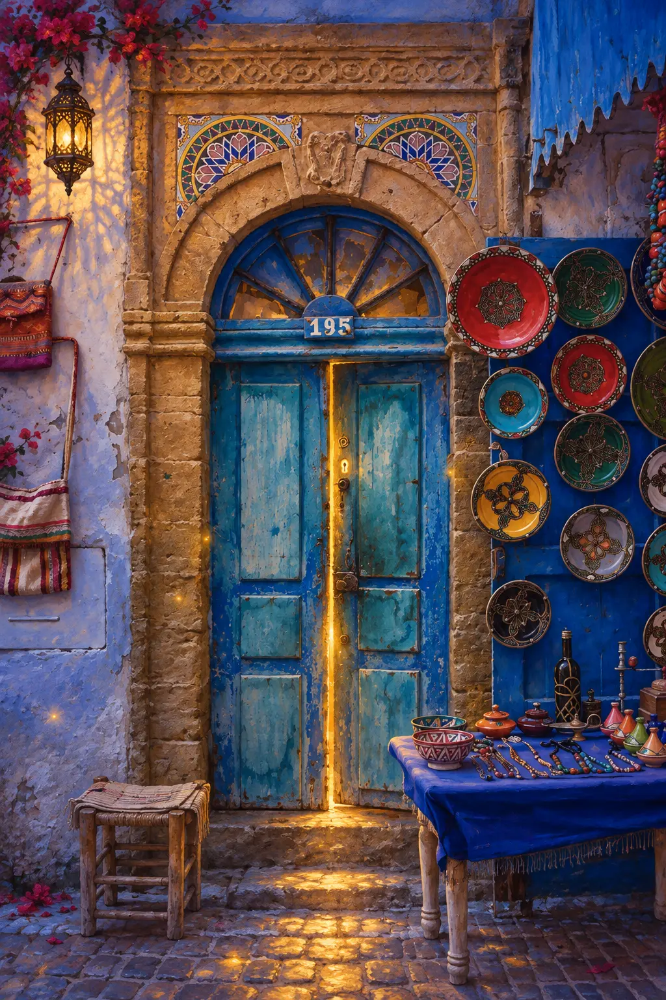

La porta chiusa
Custodisce ciò che non conosciamo ancora. Può rappresentare un limite, un segreto oppure una possibilità che attende il momento giusto per essere riconosciuta.
Una collaborazione da sogno
Tavole oniriche interattive
La soglia che attende una scelta


Tocca i punti luminosi della tavola per seguirne i simboli.
Custodisce ciò che non conosciamo ancora. Può rappresentare un limite, un segreto oppure una possibilità che attende il momento giusto per essere riconosciuta.
Mostra che oltre il confine esiste qualcosa. Non rivela l’intero paesaggio, ma offre abbastanza luce per alimentare il desiderio, la speranza oppure il coraggio di avvicinarsi.
È il punto in cui domanda e risposta si incontrano. Può indicare un accesso ancora da comprendere, la ricerca della chiave giusta oppure il bisogno di proteggere qualcosa di intimo.
È il luogo sospeso tra il prima e il dopo. Non appartiene completamente né a ciò che lasciamo né a ciò che troveremo: rappresenta il momento preciso della scelta.
Racchiude la porta come una memoria antica. Evoca protezione, durata e continuità: ogni passaggio nuovo poggia anche su ciò che abbiamo vissuto.
Molte forme e molti colori circondano la soglia. Rappresentano le possibilità, le esperienze e le voci del mondo esterno che possono attrarre oppure distrarre dalla scelta essenziale.
È la guida interiore. Illumina soltanto una parte del cammino perché, nei momenti di cambiamento, non occorre conoscere ogni risposta: a volte basta vedere il prossimo passo.
Una porta separa due spazi, ma nel sogno divide soprattutto due momenti: ciò che conosciamo e ciò che potrebbe cominciare.
Può proteggere oppure trattenere, accogliere oppure escludere. Per comprenderla non basta domandarsi che cosa ci fosse oltre. Bisogna ricordare se desideravamo attraversarla, se ne avevamo paura e se la scelta dipendeva davvero da noi.
Ogni porta onirica contiene una domanda: siamo pronti a lasciare una condizione per entrare in un’altra?
Può indicare una possibilità presente ma non ancora esplorata. Il suo aspetto e l’emozione provata suggeriscono se quel passaggio venga percepito come promessa, ostacolo oppure mistero.
Rappresenta disponibilità verso una scoperta o un cambiamento. Se si apre facilmente, il momento potrebbe essere maturo; se oppone resistenza, esistono ancora dubbi da ascoltare.
Segna il passaggio dall’intenzione all’esperienza. Può accompagnare una decisione, una trasformazione personale oppure l’ingresso in una fase nuova della vita.
Può riflettere un limite, un’occasione rimandata o la sensazione di essere esclusi. Non sempre è un rifiuto: talvolta indica che qualcosa deve ancora essere compreso o preparato.
Può esprimere frustrazione, paura di non possedere gli strumenti necessari oppure il tentativo di forzare un cambiamento per il quale non ci sentiamo ancora pronti.
È un invito incompleto. La possibilità esiste, ma non offre certezze: chiede curiosità e una piccola dose di coraggio per scoprire ciò che non è ancora visibile.
Può indicare il bisogno di concludere, proteggersi o non tornare indietro. Il sollievo parla di liberazione; il rimpianto suggerisce che il distacco non è ancora completo.
Rappresenta la richiesta di essere accolti, ascoltati o riconosciuti. L’attesa della risposta può riflettere una situazione reale in cui l’esito dipende anche da qualcun altro.
Qualcosa chiede attenzione. Potrebbe essere un’opportunità, una relazione, un ricordo oppure una parte di noi che non vuole più essere ignorata.
Può rispecchiare la ricerca di una direzione, di un luogo a cui appartenere o della soluzione più adatta fra possibilità che sembrano simili.
Indica abbondanza di alternative, ma anche indecisione. Il sogno invita a osservare quale porta attirasse lo sguardo e quale emozione suscitasse la necessità di scegliere.
Può rappresentare una possibilità visibile ma apparentemente inaccessibile. Forse l’apertura non dipende dalla forza, ma da un gesto diverso oppure da un aiuto esterno.
Suggerisce di aver trovato una comprensione, una capacità o una risorsa capace di rendere accessibile ciò che prima sembrava chiuso.
Può indicare la scoperta di una possibilità nascosta, di un talento dimenticato oppure di una parte di sé rimasta a lungo fuori dallo sguardo quotidiano.
Richiama speranza, orientamento e attrazione verso il futuro. La luce non garantisce che il passaggio sia facile, ma suggerisce che oltre l’incertezza esista qualcosa verso cui vale la pena tendere.
Non significa necessariamente rinunciare. Può indicare prudenza, bisogno di tempo oppure la consapevolezza che quella specifica soglia non corrisponde al proprio cammino.
La porta mi apparteneva oppure conduceva in un luogo sconosciuto?
Era aperta, chiusa o socchiusa?
Desideravo attraversarla oppure cercavo di allontanarmi?
Ero solo o qualcuno mi attendeva dall’altra parte?
Provavo curiosità, sollievo, paura oppure nostalgia?
Che cosa stavo lasciando dietro di me?
Ogni porta promette un altrove, ma attraversarla è soltanto l’inizio. Dopo la soglia viene il primo passo e anche il cammino può apparire nei sogni sotto forme inattese.
Sali sul Tappeto e scopri il sogno delle babbucceTavola realizzata con intelligenza artificiale per Il Tappeto Volante · Viaggi da Sogno